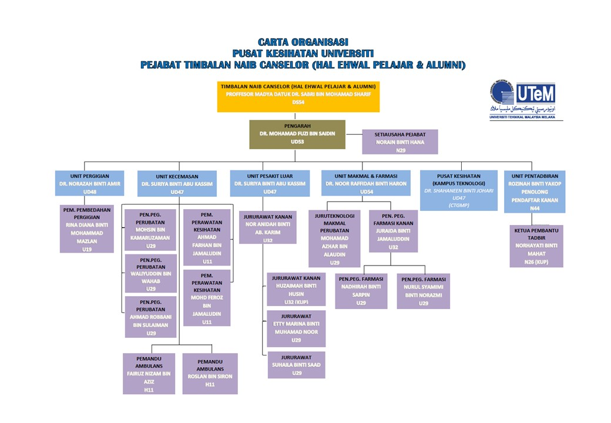

Blood Donation Information
Blood donation is a vital and selfless act that helps save lives. Donated blood is used in various medical procedures, including surgeries, trauma care, and treating medical conditions like anemia and cancer. Each donation can potentially save up to three lives, as blood can be separated into its components: red cells, plasma, and platelets. Donating blood is safe and typically takes around 10-15 minutes. Eligible donors should be in good health, meet age and weight requirements, and not have certain medical conditions. Regular blood donations are essential to ensure a steady supply for emergencies and ongoing medical treatments. Consider donating blood and making a difference in someone's life today.
Brief Organization

eDonateLife, an innovative project at the University of Technology Malaysia (UTeM), is a comprehensive and integrated blood donation management platform designed to streamline the entire blood donation process. This platform serves as a central hub connecting donors, blood banks, hospitals, and volunteers, ensuring a seamless and efficient flow of blood supply to meet the critical needs of patients. Through user-friendly interfaces and advanced technology, eDonateLife simplifies donor registration, appointment scheduling, and blood donation tracking, while also offering real-time inventory management and demand forecasting for blood banks and healthcare institutions. UTeM's commitment to this initiative underscores its dedication to leveraging technology for a noble cause, ultimately saving lives by optimizing blood donation and distribution networks.
Our Team
Under the visionary leadership of Adam, our dedicated team at UTeM has been diligently working on the development of eDonateLife, an integrated blood donation management platform. With Adam's guidance, Aisyah and Umai, as core team members, have brought their expertise and commitment to the project. Together, we are crafting a sophisticated and user-friendly platform that will streamline the blood donation process, connecting donors, recipients, and healthcare facilities seamlessly. eDonateLife is poised to revolutionize the way blood donations are managed, ensuring a readily available supply of life-saving blood for those in need. Our team is excited to contribute to this noble cause, making a significant impact on the healthcare landscape by saving lives through innovative technology.